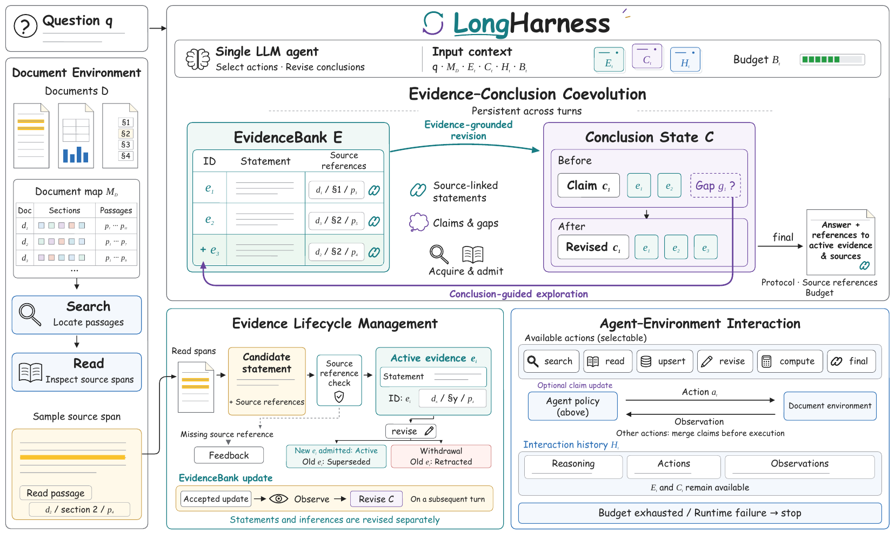

01研究背景与问题定义
长文档任务的难点不止是找到资料：Agent 即使读到了关键更正，也可能继续沿用旧数值作答。LongHarness 希望让新证据真正改变当前判断，并让尚未解决的判断决定下一步查什么。
为什么更多检索和更长历史仍然不够| 失败方式 | 为什么影响答案 | 本文的改动 |
|---|
| 查到很多，却不知道还缺什么 | 已满足的前提和未决问题混在历史中，模型容易重复泛搜。 | 显式记录结论与缺口，让检索围绕可能改变答案的信息展开。 |
| 读到更正，却没有更新判断 | 新旧事实都留在记录里，后续计算仍可能引用旧数值。 | 允许替代、撤回证据，再由模型修订受影响的结论。 |
原文案例中，Codex 计算财政支出的几何平均时，已识别出某月应采用 4400，最终却仍保留用 4100 得出的旧结果。缺少的是把更正传递到计算和答案的过程，单纯追加一条笔记并不能保证这一点。
因此，论文把“读到的事实”和“目前的判断”分开维护，并建立可更新的引用关系。标题中的约一亿 Token 是外部文档集合的规模，并非模型单次读入的上下文长度。
02方法与技术路线
LongHarness 用结论缺口决定查什么，用证据库维护当前依据，再让模型据此修订判断。共同演化组织推理方向，生命周期管理维护证据，交互控制约束每轮更新。三者由同一个模型与控制器配合完成。
LongHarness · 两类持久状态，一个受控的反馈循环
每轮输入：问题与文档地图 ＋ 证据 E ＋ 结论 C ＋ 完整历史 H ＋ 剩余预算
环节三交互控制Agent–Environment Interaction · 以下每轮操作都经过控制器
环节一证据—结论共同演化Evidence–Conclusion Coevolution
结论状态 CConclusion State已建立结论 · 支持性假设 · 未决缺口
模型选择可能改变答案的缺口
缺口驱动→
定向检索与阅读search 定位候选
read 读取原文、注册来源
产物：带来源的候选事实
候选事实→
环节二证据生命周期管理Evidence Lifecycle Management
EvidenceBank · 证据库 E- upsert：接纳 → 有效条目
- revise：替代 → 新 ID
- revise：撤回 → 旧条目失效
↶模型观察已接纳的有效证据 → 修订结论、引用与缺口 → 再选择动作更正证据不会自动改写结论；这条回路可跨多轮交错执行。
关键缺口已解决→ 按需 compute → 观察结果、核对判断 → final
模型提出一个操作 ＋ 可选结论更新
→控制器检查并执行协议 · 引用 · 预算
→返回观察成功结果或校验反馈
证据操作的更新顺序：先执行 upsert / revise → 观察哪些条目成功 → 后续轮次再修订结论。
论文原始架构图 · 点击展开

证据与结论分开保存、相互反馈；下方的生命周期管理负责条目接纳、替代和撤回。点击图片可查看大图。环节一证据—结论共同演化：用缺口驱动查询
证据库记录“文档说了什么”，结论状态记录“据此能判断什么”。模型先从当前判断中找出缺失前提，再决定查询和阅读范围；新证据到来后，重新判断哪些结论成立、需要限定或必须改写。
结论状态如何改变下一步操作| 当前状态 | 下一步要解决什么 | 对应动作 |
|---|
| 已建立结论established | 已有有效证据支持。 | 复用前提；新证据冲突时重新核对。 |
| 支持性假设hypotheses | 有支持，但仍可能存在其他解释。 | 寻找能区分或推翻解释的证据。 |
| 未决缺口open | 缺少可能改变答案的信息。 | 生成查询 → search 定位 → read 取原文。 |
缺口优先级由模型判断，论文没有固定评分或调度算法。检索无效时，模型应改写查询或调整阅读范围；search 摘要只作导航，read 注册的原文来源才可支持证据入库。
环节二证据生命周期管理：维护当前有效的依据
模型从已读原文提炼原子化事实并引用来源，控制器核对来源是否已注册。接纳后获得不可变 ID；更正保留旧记录，并显式改变条目的有效状态。
三种证据操作及其后果| 操作 | 证据库如何变化 | 对后续推理的要求 |
|---|
| 接纳 upsert | 逐条检查；成功条目成为 active，获得 ID。 | 批量可能部分成功；观察结果后，新 ID 才可在下一轮引用。 |
| 替代 revise提供新事实 | 新条目获得新 ID；旧条目变为 superseded。 | 模型用新依据更新相关判断与引用。 |
| 撤回 revise替代内容为 null | 旧条目变为 retracted，无新条目。 | 模型重查失去支持的判断，必要时重开缺口。 |
修订不会自动传播：旧条目仍可追溯，但不能再用于 compute / final。运行时提示失效引用，相关结论由模型修订；搜索和阅读仍可继续。
环节三交互控制：决定更新何时生效、答案如何提交
每轮只选一个操作，控制器先检查合法性，再处理结论更新。依赖本轮新结果的判断，要等观察结果后再写入。
更新顺序取决于操作类型| 本轮情况 | 处理顺序 | 后续结果 |
|---|
| 操作不合法 | 返回错误，不修改持久状态。 | 模型根据反馈调整操作。 |
| upsert / revise | 执行证据操作 → 返回接纳或修订结果。 | 本轮暂不更新 C；后续轮次再修订结论。 |
| 其他合法操作 | 合并已有依据支持的 C 更新 → 执行操作。 | 新返回的阅读或计算结果，留给后续轮次使用。 |
收尾阶段：工具检查与模型判断各负责什么| 环节 | 工具或控制器 | 模型仍须核对 |
|---|
| 计算 compute | 计算表达式，检查请求声明的证据 ID。 | 操作数是否取对；方向、单位、精度是否正确。 |
| 提交 final | 检查输出结构，以及引用能否解析到有效证据和原文。 | 答案是否来自当前已建立结论；剩余缺口是否会改变答案。 |
检查边界：compute / final 只校验本次声明的 ID，不遍历结论中的全部引用。原文理解、推断支持关系与答案正确性仍由模型负责。
示例：预算修订如何从证据传递到结论 · 点击展开
说明性示例：假设问题是“某部门第二季度预算比第一季度增长多少”。以下数值、ID 和状态字段用于解释机制，不是论文原始运行记录。
RUNTIME STATE待核对修订公告
状态 A · 当前证据尚不充分
- EvidenceBank · 已读事实
E1 · active：第一季度预算为 100，引用已读来源 r1。E2 · active：第二季度预算为 130，引用已读来源 r2。
- state.established · 已建立结论
- 已确定以第一季度预算 100 为分母计算环比增幅；引用 E1。
- state.hypotheses · 支持性假设
- 先前 compute 已返回 30%，引用 E1、E2；该结果只有在 E2 仍是最新预算时才能采用。
- state.open · 未决缺口
- 第二季度预算是否已被后续公告修订？这会改变增幅，需要定向查找修订公告。
RUNTIME STATE多轮修订与计算后
状态 B · 使用更正后的依据
- EvidenceBank · 更新后的事实
E1 · active：第一季度预算仍为 100。E2 · superseded：旧预算 130 不再可引用。E3 · active：新公告将第二季度预算改为 120，引用 read 新注册的 r3。
- state.established · 更新后的结论
- compute 已返回 (120 − 100) ÷ 100 = 20%。结论改为增长 20%，并引用当前有效的 E1、E3。
- state.hypotheses / state.open
- 显式提交
hypotheses: [] 和 open: []，清除旧假设与已解决缺口；省略字段不会自动清空它们。
- final · 提交依据
- 提交 20% 及 E1、E3。系统不会仅因 E2 失效，就自动把旧的 30% 结论改成 20%。
两份状态之间的一条连续操作路径 · 说明性轮次| 轮次与操作 | 返回结果 | 结论更新发生在何时 |
|---|
| 第 n 轮：read | 读到修订公告，注册来源 r3。 | 此时还没有新证据 E3，不能提前据此引用。 |
| 第 n＋1 轮：revise | 用 r3 支持的新事实替代 E2；成功后产生 E3。 | 本轮暂不更新 C，先确认替代是否成功。 |
| 第 n＋2 轮：compute | 用有效 E1、E3 计算增幅，返回 20%。 | 可先调整旧假设与缺口；本次计算结果须等观察后才能写入判断。 |
| 第 n＋3 轮：final | 提交 20% 以及有效 E1、E3。 | 提交前合并新结论，清除旧假设和已解决缺口。 |
实现参考：列表更新、检索配置与运行预算 · 点击展开
结论列表如何合并
| 提交方式 | 生效规则 |
|---|
| 提供某一类列表 | 整份替换该类内容；仍成立的同类条目需一并保留。 |
| 省略某一类列表 | 保留原样。 |
| 显式提交空列表 | 清空该类内容。 |
文档组织与检索
文档地图包含标识、标题和章节结构。文本块沿段落切分，过长段落拆成最多约 1,024 个估计 Token 的非重叠块。词项查询采用 BM25 风格排序，也支持正则表达式及文档、章节范围限制；read 返回原文并注册可回溯字符偏移的来源片段。
持久状态与终止条件
开始时 E、C、H 均为空。模型权重固定；每轮追加推理、操作与观察，完整历史与当前 E、C、剩余预算一同传入后续请求，不自动截断或压缩。证据库与结论状态不会替代历史。
| 限制 | 设定 |
|---|
| 交互与搜索 | 最多 200 轮、60 次搜索。 |
| 读取 | 累计 1,000,000 Token，单次最多 16,384 Token；只计 read 返回的源文本。 |
| 终止 | 预算耗尽、运行失败或请求重试仍失败时，可能无有效 final；无已接纳答案的任务计错。 |
每轮请求仍受模型端点的上下文上限约束；控制器接纳 final 不代表基准评分正确。入库提示要求只重试被拒条目，已接纳条目的更正通过 revise 完成。
03实验设计与结果分析
实验在 GLM-5.3-Flash 和 Qwen3.8-Flash 上比较多个框架。这里重点看需要自行从文档集合找来源的 OfficeQA；AA-LCR 和 LongBench 的给定上下文评测也取得提升。
OfficeQA V1 有 697 份文档、133 个问题，语料约 100M Token；V2 有 1,435 份文档、90 个更侧重跨来源组合的问题。下表采用精确匹配准确率，与允许 5% 相对误差的指标分开。
OfficeQA 精确匹配准确率（%）· 对照为每个设置中最强的其他代理框架| 骨干 / 评测 | 最强其他代理 | 对照 Exact | LongHarness Exact |
|---|
| GLM · V1 | Claude Code | 48.1 | 60.2 |
| GLM · V2 | Codex | 42.2 | 61.1 |
| Qwen · V1 | Claude Code | 53.4 | 61.7 |
| Qwen · V2 | Codex | 50.0 | 51.1 |
V2 上，GLM 的增益为 18.9 个百分点，Qwen 只有 1.1 点，优势明显依赖骨干模型。主表为单次运行；GLM 的三次 V2 结果仍优于对照，但 Qwen 没有相同的重复验证。
GLM · V2 三次运行LongHarness：59.63% ± 1.28 点Codex：41.11% ± 4.00 点均值 ± 标准差
交互更集中，但真实 Token 和金额成本尚不清楚
准确率提升是否伴随更多交互，可以先从每题模型交互轮数观察。两版 OfficeQA 的对比反映了任务变复杂后的变化，但轮数只能描述交互次数，不能直接衡量每轮输入的长度。
GLM 每题模型交互轮数的中位数 · V2 同时增加语料与题目组合复杂度| 框架 | OfficeQA V1 | OfficeQA V2 | 增加轮数 |
|---|
| LongHarness | 22 | 30 | +8 |
| Codex | 19 | 43 | +24 |
| Claude Code | 21 | 116 | +95 |
LongHarness 的轮数增加较小，与围绕缺口开展检索的设计一致。不过，V2 同时改变了语料和题目，不能据此单独证明对语料规模的适应能力；轮数少也不等于总 Token 或费用更低。
实际成本缺口：论文没有统一报告总输入输出 Token、金额或端到端时延。累计阅读 1M Token 只计算 read 返回的源文本，不包含完整历史和当前状态被反复输入模型的开销。
比较效率还需要结合各框架允许执行多少操作。不同框架的上限分别按策略操作、模型轮、工具调用或根循环计算，主结果中的准确率与轮数因此都需要放在各自的运行约束下理解。
预算单位也未完全对齐 · 主结果比较的是完整框架| 框架 | 运行上限 |
|---|
| LongHarness | 200 次策略操作，最多 60 次搜索；每次读取不超过 16,384 Token。 |
| Codex / Claude Code | 200 个模型轮及 200 次工具调用。 |
| RLM | 30 次根循环，并可调用子模型。 |
消融显示“可修订证据＋结构化结论”各有作用
外部框架的对比同时包含接口、提示和预算等差异；组件消融则在 LongHarness 内部移除或替换某项能力，观察准确率如何变化。这能更直接地检验证据修订、结论状态和缺口反馈各自的作用。
GLM · OfficeQA V2 消融（选录）· 下降百分点沿用论文未四舍五入口径| 变体 | Exact（%） | 相对完整设计下降 | 对应能力 |
|---|
| 完整 LongHarness | 61.1 | — | 完整双状态反馈 |
| 去掉证据库和结论状态，只保留历史 | 53.3 | 7.8 点 | 显式维护状态 |
| 保留证据库，去掉结论状态及其反馈 | 51.7 | 9.4 点 | 从事实形成当前判断 |
| 证据只能追加，不能替代或撤回 | 51.1 | 10.0 点 | 淘汰失效依据；此处损失最大 |
| 保留双状态，去掉缺口指导检索的指令 | 53.3 | 7.8 点 | 用结论缺口主动指导探索 |
| 用可编辑自由笔记替代结构化结论 | 53.3 | 7.8 点 | 结构化表达判断 |
这些消融支持各部件的实用价值，但不能解释完整框架的全部优势：去掉双状态后仍有 53.3%，高于外部 Codex 的 42.2%，剩余的提示、检索接口和行动约束也可能贡献收益。
04贡献、局限与综合评价
论文贡献在于把事实、判断与未决缺口接成可持续维护的反馈过程：结论引导证据获取，证据修订再改变后续判断。可修订证据与结构化结论共同构成了这套框架的关键能力。
证据边界与局限
| 尚未解决的问题 | 对结论的影响 |
|---|
| 语义正确性仍由模型负责 | 来源和引用合法，仍可能伴随误读、计算前提遗漏或过时判断。协议检查没有形成推理正确性的保证。 |
| 状态机制的净收益尚未分离 | 需要在固定接口、提示与总预算下比较自由笔记和双状态，才能更直接区分结构设计与额外开销的影响。 |
| 长轨迹仍依赖主动维护 | 历史持续增长，修订又不自动传播。模型必须及时发现受影响的结论，才能让状态在后续推理中保持有效。 |